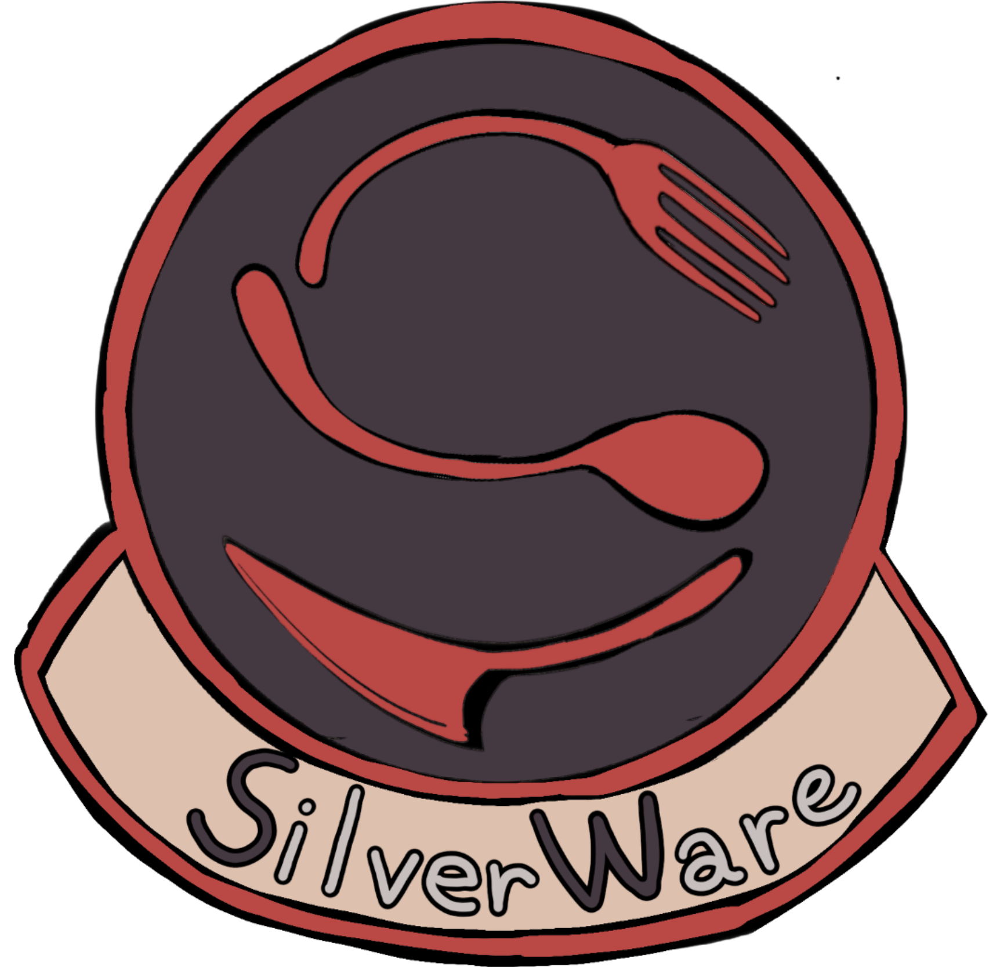
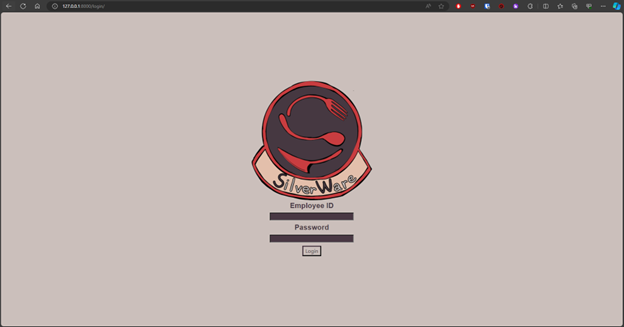
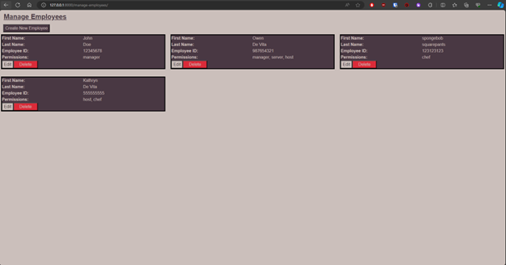
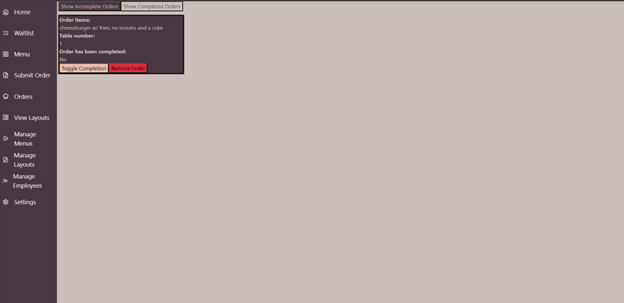
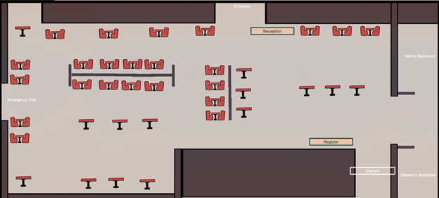
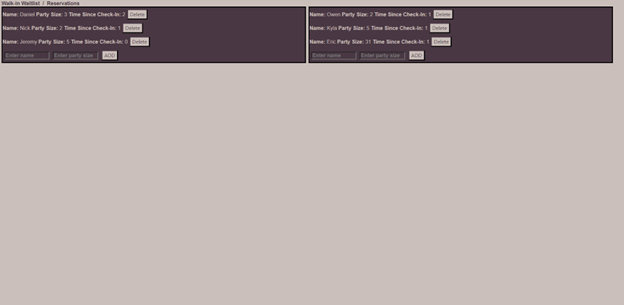
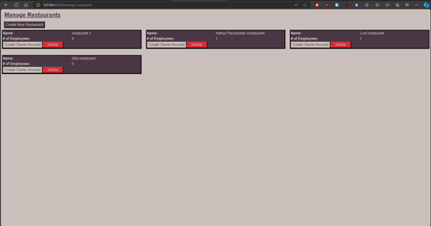
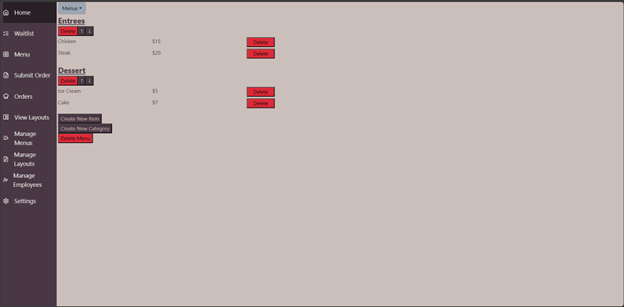

- Languages/Frameworks used to develop the SilverWare Application:
Python, JavaScript, Node,js, React.js, Django,
- Challenges Endurred:
Our development team had lack of knowledge of creating any website before.
This was our first, and we became self-taught thorughout the entire process. We were introduced to the frameworks provided above, leading us to spend a lot of time how those functionalities worked.
- Team members: Kyla Rivera,
Owen De Vita,
Jeremy Boyles,
Daniel Vaca,
Nicklaus Marietta
- Our development group split up work using Trello, assigning tasks to each person based on their strengths and interests. Kyla was the artist — she designed the projects’ UI, sprites, and logo. Daniel completed the waitlist and reservation system. Owen finished the login system, restaurant layout view and edit pages, the employee management page, the restaurant layout page, and the main page that blends all of the pages together into one cohesive program. Jeremy completed the order system and chef page. Nicklaus did the menu system and editor







